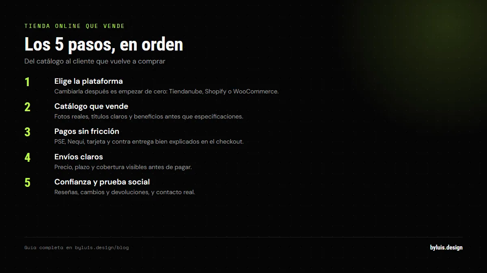
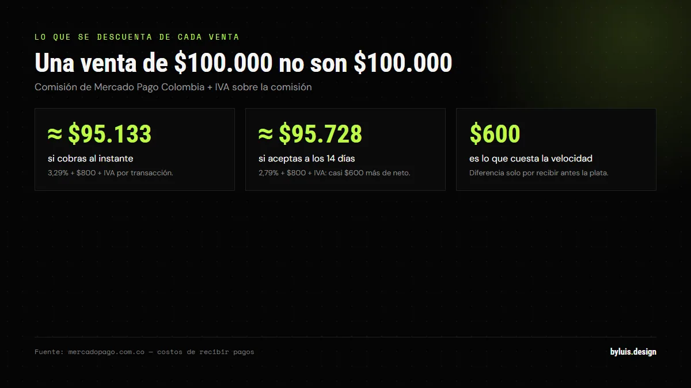

Montar una tienda online en 2026 es más fácil que nunca: hay plataformas que la dejan lista en un día. Pero una cosa es tener una tienda y otra muy distinta es que venda. En esta guía te doy el proceso completo: qué plataforma elegir, cómo montarla, cómo recibir pagos en Colombia y qué NO puede faltar para convertir visitas en ventas.
Respuesta corta: para crear una tienda online que venda en Colombia en 2026: elige plataforma (Tiendanube/Shopify/WooCommerce), carga un catálogo con fotos reales y descripciones que vendan, conecta pagos (PSE, Nequi, tarjetas), define envíos y agrega prueba social (reseñas). Precio profesional: $2.000.000-$18.000.000; plataforma: desde $100.000/mes.
Paso 1: Elige la plataforma correcta
Es la decisión más importante, porque cambiarla después significa empezar de cero. Las tres opciones serias en 2026:

| Plataforma | Para quién | Costo |
|---|---|---|
| Tiendanube | Negocios LATAM que quieren arrancar rápido con soporte en español | Desde $100.000/mes |
| Shopify | Marcas que quieren escalar con ecosistema global de apps | Desde USD 29/mes |
| WooCommerce | Quienes ya tienen WordPress y quieren control total (hosting aparte) | Gratis + hosting |
Si tu mercado es Colombia y no quieres complicarte, Tiendanube es la opción más directa: ecosistema completo, pagos locales integrados y soporte en español. Si planeas vender internacional y crecer fuerte, Shopify. Si ya tienes WordPress o necesitas algo muy a medida, WooCommerce.
Paso 2: Catálogo que vende (no un listado de productos)
La foto y la descripción son tu vendedor virtual: son lo único que el cliente ve antes de comprar. Lo que diferencia una tienda que vende de una que no:
- Fotos reales y de calidad: varias por producto, con fondo limpio y detalle. La fotografía de producto es la inversión que más retorna.
- Descripciones que venden, no que describen: "Chaqueta impermeable para lluvias de Bogotá" vende más que "Chaqueta color negro, talla M".
- Precio claro y visible: sin sorpresas en el checkout.
- Stock visible: "Quedan 3" crea urgencia real.
Paso 3: Pagos que no espanten al cliente
En Colombia, el pago es donde se pierden la mayoría de las ventas. Si el cliente no encuentra SU método de pago, abandona el carrito. Lo mínimo que tu tienda debe aceptar:
- PSE (transferencia bancaria — el favorito en Colombia).
- Nequi y Daviplata (billeteras digitales masivas).
- Tarjetas de crédito y débito (Visa, Mastercard, Amex).
- Pago contra entrega (opcional, muy usado en zonas donde no confían en pagar antes).
Esto se resuelve con una pasarela (Mercado Pago, Wompi, o las integraciones nativas de Tiendanube/Shopify). Cuantos más métodos ofrezcas, más ventas cierras.
Paso 4: Envíos claros desde el día uno
El envío es la segunda razón de abandono del carrito. Define antes de lanzar:
- Zonas: ¿envías a tu ciudad, a todo el país o ambos?
- Costos: tarifa plana, gratis desde X monto, o cálculo por peso (con coordinadoras tipo Interrapidísimo, Servientrega o las integradas en la plataforma).
- Tiempos: di cuánto tarda cada zona. La incertidumbre mata ventas.
- Envío gratis desde X: es la táctica que más sube el ticket promedio.
Paso 5: Confianza y prueba social
El e-commerce es una batalla de confianza: el cliente no te ve, no te toca el producto. Lo que genera confianza:
- Reseñas reales de clientes en cada producto.
- WhatsApp visible para preguntas (en LATAM es decisivo).
- Políticas claras de cambios, devoluciones y garantía.
- Datos reales: dirección, NIT o razón social, contacto. Las tiendas fantasma no venden.
¿Cuánto cuesta y cuánto tarda?
Con plataforma: desde $100.000/mes y la montas en 1-2 semanas con buen catálogo. A medida con un profesional: $2.000.000 a $18.000.000 y 6-10 semanas, con diseño único, pagos integrados y SEO. La plataforma sirve para validar; el desarrollo a medida sirve para escalar.
Cuánto cuesta de verdad mantener la tienda (después del plan)
El plan mensual es lo visible. Lo que decide si ganas o pierdes es lo que se descuenta de cada venta: en Colombia, la pasarela cobra un porcentaje más una tarifa fija más el IVA sobre esa comisión. Mercado Pago va del 3,29% + $800 + IVA si quieres la plata al instante, al 2,79% + $800 + IVA si aceptas recibirla a los 14 días. En una venta de $100.000, la misma transacción cuesta casi $600 más solo por cobrar rápido.

| Cuándo quieres tu plata | Comisión por venta | Neto en una venta de $100.000 |
|---|---|---|
| Al instante | 3,29% + $800 + IVA | ≈ $95.133 |
| A los 14 días | 2,79% + $800 + IVA | ≈ $95.728 |
El IVA se calcula sobre la comisión: no lo puedes ignorar. Después vienen el dominio, el hosting si te sales de la plataforma, el empaque y el envío: calcula tu precio final con todo eso adentro. Si dejas el envío "para ajustarlo después", lo estás regalando.
Cómo fijar el precio y el envío sin perder plata
Fijar el precio mirando solo el costo del producto es la razón número uno por la que una tienda nueva vende y no gana. Haz la cuenta al revés, desde lo que te queda:
- Resta primero la pasarela. Si de una venta de $100.000 te quedan cerca de $95.130, tu margen arranca de ahí, no de los $100.000.
- Suma empaque, envío y devoluciones. Casi todas las tiendas nuevas subestiman el empaque y el costo de un envío gratis mal calculado.
- Muestra el costo de envío temprano. Según Baymard Institute, el 40% de los compradores abandona el carrito porque los costos extra (envío, impuestos) aparecen tarde. Verlos desde la ficha del producto, y no en el último paso, es la diferencia.
- El envío gratis sube el ticket, si lo calculas bien. En Colombia es la táctica número uno: el 54% de las marcas que venden online invierte en envío gratis (NubeCommerce Colombia 2026). Ponlo "desde X monto", con X por encima de tu ticket promedio.
SEO de producto: que te encuentren por lo que vendes
De nada sirve una tienda linda si nadie encuentra tus productos. Una ficha que posiciona tiene tres cosas:
- Título con lo que la gente busca: nombre exacto del producto + marca + atributo clave (color, talla, modelo). "Mug cerámico 350 ml negro mate" posiciona; "Producto 1" no.
- Descripción que resuelve dudas: qué es, para quién, medidas, materiales y qué incluye. Es la misma información que entiende Google y la que decide la compra.
- Fotos propias, en alta resolución y con fondo limpio. Varias por producto. La foto prestada de internet no convierte ni posiciona.
Y súmale datos estructurados: Google recomienda marcar cada ficha con el nombre, la imagen, la descripción y la oferta con precio y disponibilidad. Eso permite que el resultado muestre precio, stock y reseñas y gana el clic sin pauta. El marcado debe venir en el HTML de la página, no generado por JavaScript.
Preguntas frecuentes
¿Puedo vender por Instagram sin tienda online?
Sí, pero con límites: el catálogo, el carrito y el pago quedan en mensajes privados y pierdes ventas por fricción. La tienda online es donde el cliente compra con formalidad; Instagram es el escaparate que lleva tráfico.
¿Necesito RUT o cámara de comercio para vender online?
Para vender formalmente y con pasarelas de pago sí necesitas RUT (persona natural o empresa). Las plataformas piden datos fiscales para los pagos. Empezar informal sirve para probar, pero no para escalar.
¿Qué es un carrito abandonado y cómo lo recupero?
Es cuando el cliente agrega al carrito pero no paga (pasa en el 70-80% de los casos). Se recupera con recordatorios por email/WhatsApp, envío gratis o descuento por tiempo limitado. Las plataformas incluyen estas herramientas.
¿Cuánto se demora posicionar mi tienda en Google?
Entre 3 y 6 meses con SEO orgánico. Para vender desde el día uno, combina SEO (a mediano plazo) con redes sociales y Google Ads (resultados inmediatos mientras el SEO madura).
¿Cuánto cobra la pasarela de pago por cada venta en Colombia?
Depende del plazo. Mercado Pago Colombia cobra 3,29% + $800 + IVA por venta con la plata al instante, o 2,79% + $800 + IVA a 14 días. El IVA se calcula sobre la comisión, no sobre la venta. Ese medio punto, con volumen, es margen puro.
¿Cómo sé si mi precio deja margen después de comisión y envío?
Calcula al revés: precio de venta menos comisión más IVA, menos empaque, menos envío y menos el costo del producto. Si te deja en cero o en rojo, súbelo antes de lanzar. Cambiar el precio con la tienda andando es mucho más difícil que fijarlo bien.
¿Qué canal de publicidad funciona mejor para una tienda nueva en Colombia?
Según NubeCommerce Colombia 2026, la pauta se concentra en redes: Facebook Ads (49,1%) e Instagram Ads (37,8%), con Google Ads y TikTok como complemento (13,1% cada uno). Elige un solo canal, mide cuánto pagas por venta y escala el que convierte.
¿Cómo hago para que mis productos aparezcan en Google con precio y disponibilidad?
Marcando cada ficha con datos estructurados de producto: nombre, imagen, descripción y la oferta con precio y disponibilidad, en el HTML inicial y no generados por JavaScript. Así Google muestra precio, stock y reseñas en el resultado y ganas el clic antes de que entren.
Sigue leyendo
Fuentes: ccce.org.co (transacciones digitales +22,2% anual en el primer trimestre de 2026), tiendanube.com (NubeCommerce Colombia 2026: envío gratis en el 54% de las marcas; Facebook Ads 49,1%, Instagram Ads 37,8%), baymard.com (abandono de carrito de 70,22%; 40% abandona por costos extra de envío e impuestos) y shopify.com (Mercado Pago Colombia: 3,29% + $800 + IVA al instante, 2,79% + $800 + IVA a 14 días). Verificadas septiembre de 2026.
Te monto la tienda completa, con pagos y envíos funcionando
Te asesoro sobre la mejor plataforma para tu negocio y te la dejo lista para recibir pedidos. Escríbeme y te paso el plan y el costo exacto.